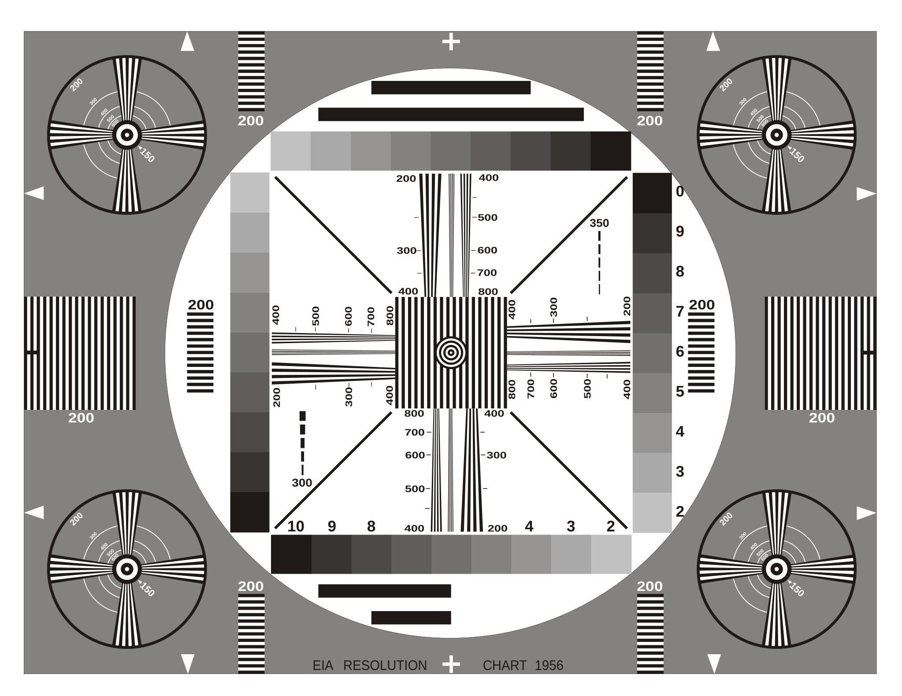
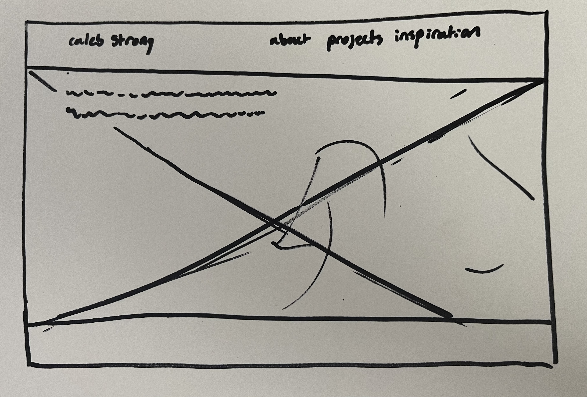

Since this page is the jumping off point for the rest of the interactive sketchbook, I thought that the most
crucial thing for somebody viewing the page is to know what it is and what it is for. The site title is the largest
and most apparent element, followed by the navigation, which clues the user into the various aspects of the website.
Underneath, there is a short description of the purpose of the site which highlights its evolving nature.
The wireframe displays a future goal for the structure of the webpage, using an image banner as the largest and most
dominant element. This image would ideally feature a gallery of some of my projects and link to their page as it
cycles through. I also hope to overlay the website description, which could eventually be a personal bio,
on this banner to better showcase the intent of the website.